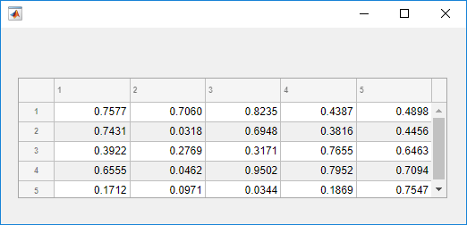
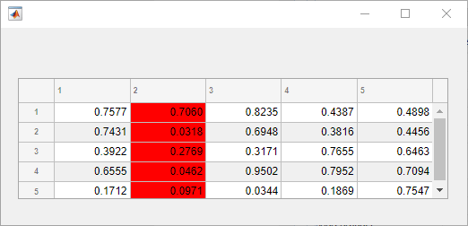
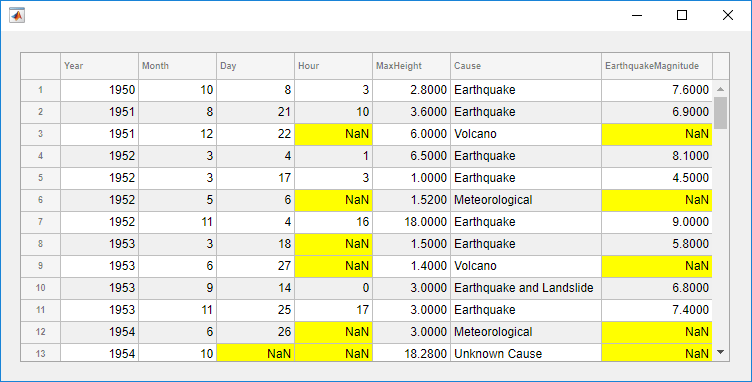
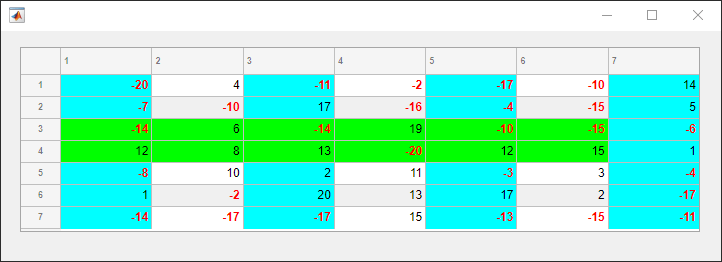
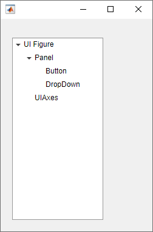
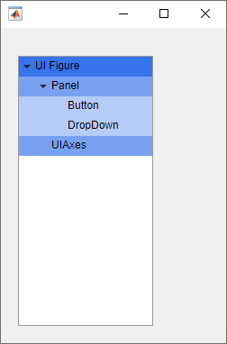
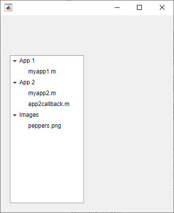
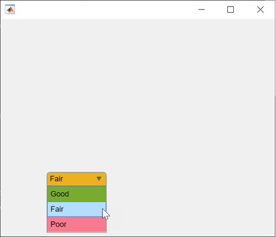
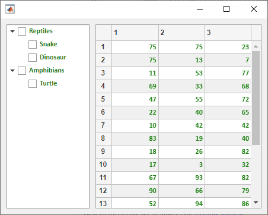

addStyle
Add style to UI component
Syntax
Description
Table
addStyle(
adds the style to a specific row, column, or cell. For example,
tbl,s,tableTarget,tableIndex)addStyle(tbl,s,"column",3) adds the style to the third column of the
specified table.
Tree
Since R2022a
addStyle(
adds the style to a specific node, subtree, or tree level. For example,
tr,s,treeTarget,treeIndex)addStyle(tr,s,"level",1) adds the style to the top-level nodes of the
specified tree.
List Box
Since R2023a
addStyle(
adds the style to a specific item of the list box. For example,
lb,s,listBoxTarget,listBoxIndex)addStyle(lb,s,"item",3) adds the style to the third item of the
specified list box.
Drop-Down
Since R2023a
addStyle(
adds the style to a specific item of the drop-down component. For example,
dd,s,dropDownTarget,dropDownIndex)addStyle(dd,s,"item",3) adds the style to the third item of the
specified drop-down component.
Examples
Change the background color of the cells in a table column by creating a style and applying it to the table.
Create a figure with a table UI component in it and populate the table with numeric data.
fig = uifigure; fig.Position = [500 500 520 220]; uit = uitable(fig); uit.Data = rand(5); uit.Position = [20 30 480 135];

Then, create a style with a specific background color and add the style to the
second column of the table using the addStyle function.
s = uistyle('BackgroundColor','red'); addStyle(uit,s,'column',2)

Style cells in a table UI component that contain missing values. In this
case, add a yellow background color style to cells that have NaN
values.
Read tsunami sample data into the workspace as a table array. Then create a table UI component to display the data.
tdata = readtable('tsunamis.xlsx'); vars = {'Year','Month','Day','Hour', ... 'MaxHeight','Cause','EarthquakeMagnitude'}; tdata = tdata(1:100,vars); fig = uifigure('Position',[500 500 750 350]); uit = uitable(fig); uit.Position = [20 20 710 310]; uit.Data = tdata; uit.RowName = 'numbered';
Use the ismissing function to get a logical array of the table
elements that contain missing values. Find the row and column subscripts for the
elements that have NaN values. Finally, create a yellow background
color style and add it to the cells with NaN values in the table UI
component.
styleIndices = ismissing(tdata); [row,col] = find(styleIndices); s = uistyle('BackgroundColor','yellow'); addStyle(uit,s,'cell',[row,col])

Create multiple styles and add them to different parts of a table UI component.
Create a figure with a table UI component in it and display numeric data in the table. Find the row and column subscripts for elements in the table with a value less than zero so you can style these cells later.
fig = uifigure; fig.Position = [500 500 720 230]; uit = uitable(fig); uit.Data = randi([-20,20],7); uit.Position = [20 30 680 185]; [row,col] = find(uit.Data < 0);
Create two background color styles and one style that specifies font color and weight. Add a cyan background color to columns 1, 3, and 5. Emphasize the cells with negative values by making their font red and bold. Then, style rows 3 and 4 with a green background color. Finally, reuse the cyan background color style and add it to column 7. For cells where multiple styles of the same type are added, the style that is added last is the one that displays in the cell.
s1 = uistyle; s1.BackgroundColor = 'cyan'; addStyle(uit,s1,'column',[1 3 5]) s2 = uistyle; s2.FontColor = 'red'; s2.FontWeight = 'bold'; addStyle(uit,s2,'cell',[row,col]) s3 = uistyle; s3.BackgroundColor = 'green'; addStyle(uit,s3,'row',[3 4]) addStyle(uit,s1,'column',7)

Create a tree to display a simple app hierarchy and highlight the different hierarchy levels.
Create a tree that represents the component hierarchy in a MATLAB® app. At the top level there is a UI figure window. The figure contains a
UIAxes object and a Panel container. The panel
holds a Button and a DropDown object. Expand all
nodes of the tree to see the full hierarchy.
fig = uifigure('Position',[100 100 250 350]); t = uitree(fig); fignode = uitreenode(t,'Text','UI Figure'); pnlnode = uitreenode(fignode,'Text','Panel'); axnode = uitreenode(fignode,'Text','UIAxes'); btnnode = uitreenode(pnlnode,'Text','Button'); ddnode = uitreenode(pnlnode,'Text','DropDown'); expand(t,'all')

Create three styles with background colors in different shades of blue to highlight the different tree levels. Apply the darkest background to the nodes at level one, a lighter background to the nodes at level two, and the lightest background to the nodes at level three.
s1 = uistyle('BackgroundColor','#3773EB'); s2 = uistyle('BackgroundColor','#78A1F2'); s3 = uistyle('BackgroundColor','#B5CBF8'); addStyle(t,s1,'level',1); addStyle(t,s2,'level',2); addStyle(t,s3,'level',3);

Style nodes in a tree that showcases a file structure to visually distinguish different file types.
Create a tree UI component. Each top-level node represents a folder. Each child node represents a file in that folder. Expand the tree to see all the nodes.
fig = uifigure("Position",[300 300 350 400]); t = uitree(fig); % Parent nodes n1 = uitreenode(t,"Text","App 1"); n2 = uitreenode(t,"Text","App 2"); n3 = uitreenode(t,"Text","Images"); % Child nodes n11 = uitreenode(n1,"Text","myapp1.m"); n21 = uitreenode(n2,"Text","myapp2.m"); n22 = uitreenode(n2,"Text","app2callback.m"); n31 = uitreenode(n3,"Text","peppers.png"); expand(t)

Create three styles: one with a bold font weight, one with an italic font angle, and one with an icon.
dirStyle = uistyle("FontWeight","bold"); mStyle = uistyle("FontAngle","italic"); imgStyle = uistyle("Icon","peppers.png");
Apply the bold style to the top-level nodes to distinguish the nodes that
represent folders. Apply the italic style to the children of the App
1 and App 2 nodes to distinguish the nodes that
represent MATLAB program files. Finally, apply the icon style to the node that
represents an image file to show a preview of the image.
addStyle(t,dirStyle,"level",1) addStyle(t,mStyle,"node",[n1.Children;n2.Children]) addStyle(t,imgStyle,"node",n31)

Since R2023a
Create a list box with three items that represent different images.
fig = uifigure; lb = uilistbox(fig,"Items",["Peppers","Nebula","Street"]);
Create three styles with icons that correspond to the list box items.
s1 = uistyle("Icon","peppers.png"); s2 = uistyle("Icon","ngc6543a.jpg"); s3 = uistyle("Icon","street1.jpg");
Add the styles to the list box items to display the icons.
addStyle(lb,s1,"item",1); addStyle(lb,s2,"item",2); addStyle(lb,s3,"item",3);

Since R2023a
Create a drop-down UI component with three items.
fig = uifigure; dd = uidropdown(fig,"Items",["Good","Fair","Poor"]);
Create three background color styles.
s1 = uistyle("BackgroundColor","#77AC30"); s2 = uistyle("BackgroundColor","#EDB120"); s3 = uistyle("BackgroundColor","#F77A8F");
Add the styles to the drop-down component items to change their background colors.
addStyle(dd,s1,"item",1); addStyle(dd,s2,"item",2); addStyle(dd,s3,"item",3);
The item background colors update, and the appearance of the component reflects the style of the selected item. The style does not change the color that displays when a user points to an item.

Add a single style to both a check box tree and a table UI component to create a cohesive app appearance.
Create a figure window, and add a check box tree and a table in a grid layout manager. Populate both components with some sample data.
fig = uifigure('Position',[300 300 450 330]); gl = uigridlayout(fig,[1 2]); gl.ColumnWidth = {'1x','2x'}; tr = uitree(gl,'checkbox'); n1 = uitreenode(tr,'Text','Reptiles'); n11 = uitreenode(n1,'Text','Snake'); n12 = uitreenode(n1,'Text','Dinosaur'); n2 = uitreenode(tr,'Text','Amphibians'); n21 = uitreenode(n2,'Text','Turtle'); expand(tr) tbl = uitable(gl,'Data',randi(100,[20 3]));

Create a style that specifies the font color, name, and weight. Apply this style to both the entire tree and the entire table.
s = uistyle('FontColor',[0.1 0.5 0.06], ... 'FontName','Calibri', ... 'FontWeight','bold'); addStyle(tr,s) addStyle(tbl,s)

Input Arguments
Tips
To see a list of the styles that have been added to a UI component, query the value of the
StyleConfigurationsproperty of the component.
Version History
Introduced in R2019bSee Also
Functions
uistyle|removeStyle|uitable|uitree|uilistbox|uidropdown
Properties
- Style Properties |
Table|Tree|CheckBoxTree|DropDown|ListBox